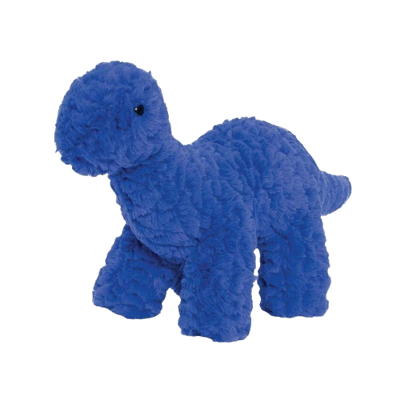

TIPO 03
(O ambicioso)
O bem-sucedido: Pragmático e orientado para o sucesso, adaptável e consciente da sua imagem.
O eneagrama tipo 03 é conhecido como “o vencedor” pois pessoas com essa personalidade são centradas e voltadas às suas próprias metas e objetivos, tendo suas realizações pessoais como principal foco.
CARACTERÍSTICAS
Positivas
Determinação, eficiência, autoconfiança, adaptabilidade, liderança carismática, ambição, versatilidade, foco em resultados, empreendedorismo, habilidade de comunicação, habilidade de realização, confiança, orientação para o sucesso, otimismo, capacidade de motivar os outros, habilidade de trabalho em equipe, visão estratégica, resiliência, entusiasmo.
Negativas
Preocupação excessiva com a imagem, supressão de emoções autênticas, competição extrema, tendência à superficialidade, dependência da validação externa, falta de consciência pessoal, impaciência, trabalho excessivo, tendência à manipulação da verdade, desconexão emocional, busca incessante por sucesso externo, negligência de necessidades emocionais.
INFÂNCIA

Desde cedo, essas crianças demonstram uma inclinação natural para buscar reconhecimento, destacando-se em atividades que atraem atenção e elogios. A competitividade é uma característica intrínseca, sendo a vitória e o destaque objetivos valiosos. A imagem pessoal desempenha um papel significativo, impulsionando a busca por sucesso e admiração desde os primeiros anos.
Quando crianças, esse tipo provavelmente aprendeu desde cedo que a conquista resultava em amor e elogios, então eles estabeleceram sua identidade ao ganhar atenção na forma de sucesso. Procuram projetar uma imagem específica de si mesmos e reprimir seus sentimentos internos. Esse eneatipo pode ter dificuldade para entender suas próprias emoções, pois se concentra no que deseja fazer e alcançar.
NO TRABALHO
O comprometimento é a palavra chave para essa personalidade. No mundo profissional, são empenhados e se dedicam 100% ao trabalho que lhes foi designado. São rápidos e práticos, além de terem todas as ações justificadas para o cumprimento das metas. Tende a ser mais introvertido, sério e focado no trabalho do que em compromissos e relacionamentos sociais.
Esse tipo pode ser encontrado em carreiras como direito, marketing, negócios, política e finanças. Como buscam o reconhecimento, seu dia a dia é intenso e tentam desenvolver o máximo de atividades possíveis, almejando alcançar rapidamente os mais altos cargos de liderança.

TRÍADE: EMOCIONAL
Pessoas nesta tríade percebem o mundo em termos de conexões a serem estabelecidas. A vida é uma rede social para ingressar e participar. Elas processam a realidade relacional principalmente por meio e com seus sentimentos. Os tipo 3 são potencialmente os mais desconectados dos sentimentos subjacentes de inadequação. Eles aprendem a lidar com a vergonha tentando se tornar como acreditam que uma pessoa valiosa e bem-sucedida seria.

SUBTIPOS: 3w2, 3w4
As asas nos permitem individualizar os 9 tipos que são os mais gerais do Eneagrama. Você percebe que com os 9 tipos mais as 2 asas, estamos falando de 18 tipos do Eneagrama. Cada asa é um subtipo do tipo geral.